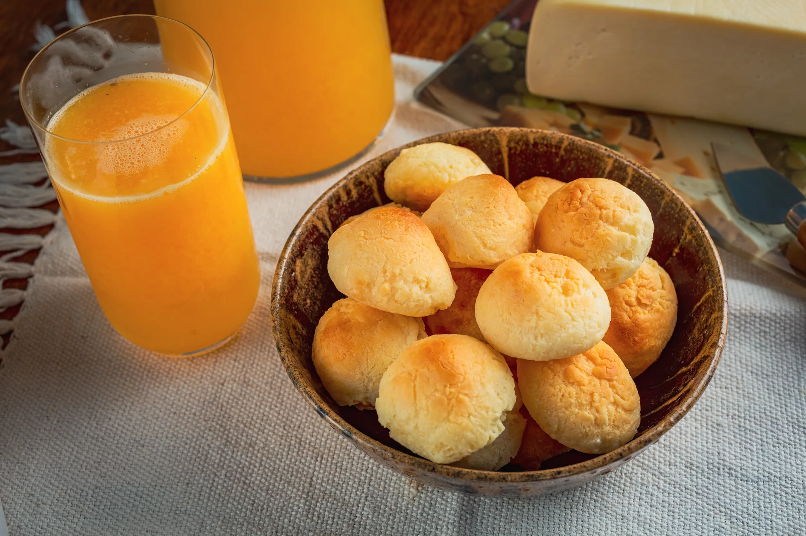

Tradição, qualidade e muito amor desde 1985
Somos uma microempresa que se preocupa, em primeiro lugar, com a satisfação do cliente. Nosso objetivo não é somente o comercial, mas sim o atendimento satisfatório de uma demanda crescente de clientes que estão, a cada dia, mais exigentes.
Nossos produtos são 100% artesanais, elaborados com ingredientes selecionados e de qualidade comprovada por meio de análises em laboratório especializado.
Nosso objetivo não são as grandes vendas, mas vendas a clientes que conhecem bem produtos diferenciados, que valorizam a qualidade e o sabor e que possuem um paladar apurado e exigente.

Com apenas 15 anos de idade, eu já era uma apreciadora dessa iguaria mineira que encanta os brasileiros. E tive o prazer de experimentar o melhor pão de queijo que eu já havia conhecido. A D. Nádia, mãe de amigos meus, encontrou seu prazer na cozinha e fazia coisas deliciosas, mas o pão de queijo dela era inigualável!
Depois dessa maravilhosa experiência gastronômica, pedi que ela me desse a receita do pão de queijo que havia me conquistado. É claro que até eu chegar ao produto final com presteza, demorou um pouco, mas o resultado foi ficando cada vez melhor.
Quando eu já era casada, e com meus dois filhos pequenos, fazia pães de queijo para os aniversários, e esse quitute era parte fundamental do sucesso das festinhas. Recebia muitos elogios! Comecei, então, a fazer para os aniversários dos filhos dos nossos amigos. Pedia que me trouxessem os ingredientes e eu os entregava prontinhos para irem ao forno.
Descobri, então, a importância dos ingredientes selecionados. A alteração do sabor e textura aconteciam com frequência e eu ficava um tanto decepcionada. Aperfeiçoei a receita e comecei a ser mais seletiva com os ingredientes, de maneira especial com o polvilho e o queijo.
O resultado foi fantástico, e comecei a receber muitos incentivos para comercializar essas delícias.
Sempre sem tempo para dedicar à cozinha, pois trabalhava 8 horas por dia como revisora de publicações, fui empurrando esse sonho para frente e, muitas vezes, o esquecia.
Passei a trabalhar em casa, ainda como revisora, e foi aí que comecei a dividir meu tempo com a culinária. Iniciei vendas tímidas entre os amigos, de um produto que agradava muito, mas não tinha uma identidade. Fui experimentando misturas e recheios. Levava para os amigos experimentarem, opinarem, criticarem. E foram surgindo as diversidades de sabores.
Em 2016, ganhei do meu cunhado, um artista de mão cheia, a logo da empresa. Foi a melhor surpresa que eu poderia ter. Minha empresa estava nascendo e já tinha uma cara — linda!
Barganhei com meu marido um espaço no quintal para construir uma cozinha própria, e a empresa foi acontecendo.
Hoje, fazemos entregas em todo o Distrito Federal, mas continuamos firmes no propósito de oferecer um produto de qualidade, feito com ingredientes selecionados, muito carinho e fabricado com todos os cuidados de higiene necessários.
Sim, desejamos crescer mais, mas sem deixar de lado o que nos move, que é oferecer um produto que faça a diferença pela qualidade e que seja parte das melhores refeições de nossos clientes.